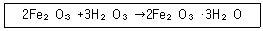

유기농업산업기사 (2011-03-20 기출문제)
1과목: 재배원론
1. 작물의 생육과정에서 화성(化性)을 유발케 하는 요인이 아닌 것은?
- C-N율
- N-K율
- 식물호르몬
- 일장효과
(정답률: 82%)

2. 작물이 생육하고 있는 포장의 표토를 잘게 쪼아서 부드럽게 하는 것을 중경이라고 하는데 그 이로운 점이 아닌 것은?
- 토양통기조장
- 비효증진
- 풍식 증진
- 잡초방제
(정답률: 82%)
3. 식물의 무기영양설을 주창한 사람은?
- 멘델(Mdndel)
- 드브리스(Devries)
- 리비이히(Liebig)
- 파스퇴르(Pasteur)
(정답률: 90%)
4. 다음 중 작물의 침수피해가 자장 크게 나타나는 조건은?
- 저수온, 정체수, 청수
- 저수온, 유수, 탁수
- 고수온, 정체수, 탁수
- 고수온, 유수, 청수
(정답률: 85%)
5. 꽃등애, 딱정벌레 등 천적을 이용하여 작물의 병충해를 방제하는 방법은?
- 법적 방제
- 생물학적 방제
- 화학적 방제
- 물리적 방제
(정답률: 95%)
6. T/R률에 대한 설명으로 옳은 것은?
- 꽃이나 어린과실을 따주면 동화물질의 소모가 적어지므로 T/R률은 감소한다.
- 일사가 적어지면 뿌리의 생장을 더욱 저해하여 T/R율은 감소한다.
- 질소를 다량 시용하면 지상부의 질소집적이 많아지므로 T/R율은 감소한다.
- 토양통기가 부족하여 뿌리의 산소공급이 부족하면 T/R율은 감소한다.
(정답률: 53%)
7. 다음 중 고위도 지대에 가장 알맞은 벼의 기상생태형은?
- blT형
- BlT형
- bLt형
- Blt형
(정답률: 67%)
8. 다음 중 산성토양에 대한 작물의 적응성이 가장 강한 작물로만 나열된 것은?
- 밀, 양파, 고구마
- 보리, 클로버, 양배추
- 벼, 귀리, 감자
- 알팔파, 자운영, 콩
(정답률: 71%)
9. 엽록소 형성에 가장 효과적인 광은?
- 청색광(430~490nm)
- 황색광(550~580nm)
- 자색광(390~420nm)
- 주황색광(590~620)
(정답률: 75%)
10. 논의 추경(가을갈이)효과가 가장 크게 나타나는 조건은?
- 다년생 찹초가 많을 때
- 유기물 함량이 많을 때
- 겨울철 강우가 많을 때
- 배수가 양호 할 때
(정답률: 86%)
11. 염수선에서 소금물의 비중이 1.08일 때 중 보오메(Be)비중은?
- 약 5
- 약 11
- 약 21
- 약 26
(정답률: 72%)
12. 노화 및 탈리 촉진 작용을 하면서 내한성 등 재해저항성의 효과가 있는 식물호르몬은?
- abscissic acid
- auxin
- gibberellin
- cytokinin
(정답률: 60%)
13. 생육 기간의 적산온도가 가장 높은 작물은?
- 메밀
- 보리
- 담배
- 벼
(정답률: 72%)
14. 신품종의 종자증식 단계 중 육종가가 직접 생산하거나 육종가의 관리하에서 생산되는 것은?
- 원원종
- 원종
- 보급종
- 기본식물
(정답률: 59%)
15. 대목의 위치에 따라 구분된 접목 방법이 아닌 것은?
- 설접
- 고접
- 근접
- 복접
(정답률: 55%)
16. 작물병의 발생요인과 관련이 적은 것은?
- 병원체를 받아들일 수 있는 작물체
- 병을 일으킬 수 있는 병원체
- 작물체와 병원체의 불친화성
- 병을 일으킬 수 있는 재배환경
(정답률: 75%)
17. 연작 장해가 가장 적은 작물은?
- 인삼
- 쑥갓
- 감자
- 담배
(정답률: 84%)
18. 옥수수와 녹두를 간작 형태로 재배하면 유리한 점은?
- 잡초경감과 지력유지
- 투광태세 양호
- 작업 용이
- 수확작업 용이
(정답률: 77%)
19. 식물이 광합성 효율을 높이기 위한 광 관리에 대한 설명으로 옳은 것은?
- 잎이 직립인 식물은 일사에너지 흡수에 유리하기 때문에 잎이 수평인 식물에 비하여 최적엽면적이 낮다.
- 여름 한낮에 식물의 광합성은 일반적으로 군락상태에서 광포화점에 도달한다.
- 과수에서 전정을 하거나 왜성대목을 사용하여 나무의 크기를 작게 하면 일사에너지 흡수에 더 유리하다.
- 엽면적지수(LAI)는 작물에 따라서 재식밀도에 의해서만 결정된다.
(정답률: 65%)
20. 식물의 생육형태를 인공적으로 조성하여 변화시켜 재배 상 유리하게 하는 것을 생육형태의 조정이라고 한다. 다음 중 생육형태의 조정에 속하지 않는 것은?
- 복대(覆袋)
- 전정
- 제얼(除蘖)
- 적심
(정답률: 50%)
2과목: 토양비옥도 및 관리
21. 논토양에서 이삭거름으로 시비한 요소비료 손실의 대부분을 차지하는 것은?
- 증산작용
- 탈질 작용
- 휘산작용
- 하천으로 유입
(정답률: 60%)
22. 비료의 생리적 반응을 가장 잘 설명한 것은?
- 토양 속에서 분해되어 식물에 흡수된 뒤 나타나는 반응
- 비료 수용액 그 자체의 반응
- 화학적 산성비료가 미생물의 작용으로 중성으로 변화되는 반응
- 유기물비료가 미생물의 분해로 무기화되는 작용
(정답률: 65%)
23. 암석의 풍화작용 중 다음 반응식이 의미하는 것은?

- 산화(oxidation)
- 수화(hydration)
- 환원(reduction)
- 산성화(acidication)
(정답률: 32%)
24. 식물이 이용 할 수 있는 유효수분의 대부분을 형성하는 수분의 종류는?
- 중력수
- 흡습수
- 결합수
- 모관수
(정답률: 86%)
25. 토양에 유기물 시용 시 발생할 수 있는 토양 특성 변화에 대한 설명으로 옳은 것은?
- 수분 보유력의 감소
- 토색이 적색 또는 회색으로 전환
- 토양의 K, Ca 등 용탈 증가
- 다당류(Polysaccharide)에 의한 토양 입단화 증가
(정답률: 59%)
26. 토양의 양이온교환용량이 15cmol+/kg이고 치환성 염기량이 10.5cmol+/kg일 때 이 토양의 염기포화도는 얼마인가?
- 15.0%
- 25.5%
- 47.6%
- 70.0%
(정답률: 38%)
27. 유기물의 탄진율(C/N ratio)과 부식화의 관계를 바르게 설명한 것은?
- 탄질율이 높은 유기물일수록 토양 중에서 분해가 잘된다.
- 탄질율이 낮으면 분해 될 때 질소기아현상이 유발된다.
- 탄질율이 높은 유기물은 요소를 첨가하면 분해가 잘된다.
- 탄질율이 낮은 호기성 상태에서 유기물 분해가 진행되면 메탄가스가 발생한다.
(정답률: 50%)
28. 토양에 잔류하는 농약이나 영양분을 지하수로 이동시키는데 있어서 가장 큰 역할을 하는 수분은?
- 모세관수
- 중력수
- 결합수
- 화합수
(정답률: 80%)
29. 과다시비에 의한 수자원의 부영양화 및 유아의 메트헤모글로빈 - 혈증(methemglobinia)과 밀접하게 관련되는 것은?
- 칼륨
- 질산염
- 인산
- 석회
(정답률: 79%)
30. 토양중에 존재하는 주요 원소들의 환원형태만을 나타낸 것은?
- CH3COOH, NH4+
- Fe3+, Mn4+
- SO42-, NO3-
- CO2, S
(정답률: 24%)
31. 복원중 (정확한 내용을 아시는분 께서는 오류 신고를 통하여 내용작성 부탁 드립니다. 정답은 2번 입니다.)
- 복원중(정확한 내용을 아시는분 께서는 오류 신고를 통하여 내용작성 부탁 드립니다.)
- 복원중(정확한 내용을 아시는분 께서는 오류 신고를 통하여 내용작성 부탁 드립니다.)
- 복원중(정확한 내용을 아시는분 께서는 오류 신고를 통하여 내용작성 부탁 드립니다.)
- 복원중(정확한 내용을 아시는분 께서는 오류 신고를 통하여 내용작성 부탁 드립니다.)
(정답률: 70%)
32. 화성암의 종류 중에서 염기성암으로만 짝지어진 것은?
- 석영반암, 현무암
- 현무암, 반려암
- 반려암, 섬록암
- 섬록암, 석영반암
(정답률: 85%)
33. 혐기성 세균인 탈질미생물이 밭토양보다 논토양에서 활발하게 작용하는 이유는?
- 논토양의 pH가 탈질작용에 적합하기 때문에
- 논토양에는 인산 함량이 높기 때문에
- 논토양에는 산소가 매우 부족하기 때문에
- 논토양에는 유기물이 매우 부족하기 때문에
(정답률: 71%)
34. 토양의 성질 중 토양 유기물의 영향을 받지 않는 것은?
- 토양구조
- 토성
- 토양 완중용량
- 토양온도
(정답률: 34%)
35. 햇빛을 이용하여 에너지를 얻을 수 이는 대표적인 토양미생물은?
- 사상균
- 조류
- 세균
- 방사상균
(정답률: 75%)
36. 특이산성토양(acid sulfate Soil)이 발생한 논에 대한 설명으로 틀린 것은?
- 해안이나 강의 하구의 배수가 과다한 곳에 나타나는 모래토양으로 엔티솔(entisol)로 분류한다.
- 석회를 처리하거나 논에 물이 마르지 않게 관수하고 배수하여 황을 제거해야 한다.
- 토양 pH가 4.0이하인 강한 산성을 띤다.
- 유기물과 황의 함량이 높은 편이다.
(정답률: 69%)
37. 토양을 조사하고 분류할 때 기본적으로 토양의 단면 특성을 파악해야 한다. 이 때 조사해야 할 특성에 해당하지 않는 것은?
- 층위의 발달
- 토성
- 토양의 반응
- 토양 구조
(정답률: 65%)
38. 다음 중 유기물 집적이 가장 잘 일어날 수 있는 토양은?
- 호수토양
- 사막토양
- 밭토양
- 논토양
(정답률: 63%)
39. 토양에 존재하는 유기성분 중 미생물에 의한 분해 저항성이 가장 큰 성분은?
- 단백질
- 리그닌
- 셀룰로오스
- 해미셀룰로오스
(정답률: 63%)
40. 인산염은 토양용액에서 가수분해하여 존재한다. 다음 가수분해 인산이온 중 pH5 근처에서 가장 많이 존재하는 것은?
- H3PO4
- H2PO4-
- HPO42-
- PO43-
(정답률: 43%)
3과목: 유기농업개론
41. 기지현상이란?
- 염류과다 집적에 의한 토양악화 현상
- 토양선충의 피해로 토양 물리성의 악화 현상
- 유독물질의 축적으로 토양전염병이 나타나는 현상
- 동일한 포장에 같은 종류의 작물을 연작할 때 작물생육의 피해가 뚜렷하게 나타나는 현상
(정답률: 73%)
42. 다음 유기물 중 탄질비(C/N율)가 가장 낮은 것은?
- 톱밥
- 유박
- 볏짚
- 밀짚
(정답률: 87%)
43. 유기농업용 종자의 육종법으로 적당하지 않은 것은?
- 1대잡종육종
- 생물공학적 육종
- 영양계선발
- 순환선발
(정답률: 65%)
44. 초기의 유기농업에 해당되는 영농방법으로 독일의 스테이너(Steiner R.)가 주장한 유기농업의 일종은?
- 녹색혁명농업
- 생명역동농업
- IPM
- 지속농업
(정답률: 59%)
45. 시설재배 토양의 특성으로 틀린 것은?
- 염류의 집적이 일어나기 쉽다.
- 토양산도의 저하가 우려된다.
- 토양통기가 불량하다.
- 토양내 인산의 적정수준 유지가 용이하다.
(정답률: 77%)
46. 시설내의 주야간 온도관리를 어떻게 하는 것이 가장 이상적인가?
- 주야간 온도를 일정하게 유지한다.
- 주야간 온도를 가급적 낮게 유지한다.
- 주야간 온도를 가급적 높게 유지한다.
- 주야간 온도를 변온관리를 한다.
(정답률: 77%)
47. 화학비료의 과다시비로 인하여 나타나는 문제와 거리가 먼 것은?
- 수확량 증가
- 고질산염 채소생산
- 지하수 오염
- 지구온난화 가스 배출
(정답률: 73%)
48. 답전윤환의 주요 목적으로 가장 적합한 것은?
- 수익성을 높이기 위해
- 토양의 물리, 화학 및 생물성을 개선하기 위해
- 작업관리를 유리하게 하기 위해
- 소득의 균형을 이루기 위해
(정답률: 80%)
49. 질산함량이 높은 채소를 장기간 섭취했을 때 나타나는 증상은?
- 소화불량증
- 비타민 부족증
- 청색증
- 단백질 부족증
(정답률: 70%)
50. 페르몬의 이용분야와 목적에 해당하지 않는 것은?
- 대량유살
- 교미교란
- 발생예찰
- 돌연변이유발
(정답률: 65%)
51. 토양에 유기물이 풍부해야 하는 이유로 틀린 것은?
- 화학비료 및 광물질비료보다 유기물비료가 싸기 때문에
- 토양미생물이 많아지기 때문에
- 흙을 기름지고 비옥하게 만들기 때문에
- 농작물 생육에 좋은 토양환경을 만들어 주기 때문에
(정답률: 82%)
52. 병해충 관리를 위하여 사용이 가능한 자재의 설명으로 옳은 것은?
- 나방류, 삽주벌레류, 파리류를 제어하는데 이용되는 님(neem)나무는 열대건조지역에서 자란다.
- 제충국은 온대지역 평야지에 적응하여 자라며 살균력이 우수한 성분을 함유한다.
- 바이오밥 나무의 추출액은 과수 해충 제어에 광법위하게 이용된다.
- 재는 개미, 이화명충 등을 제어할 수 있으나 살균력은 없다.
(정답률: 53%)
53. 환경친화적 방제에 대한 설명으로 거리가 먼 것은?
- 오이 세균성점무늬병, 토마토 역병, 딸기 탄저병 등과 같이 빗방울에 의하여 병원균이 비산하여 만연되는 병해는 비가림 재배에 의하여 방제할 수 있다.
- 광 의존성이 강한 사상균에 의한 공기전염성 병해는 적외선 제거필름을 이용하여 방제할 수 있다.
- 새우, 초어, 우렁이, 참게, 오리 등 대 ·소동물을 이용한 잡초방제법은 최근 유기농가에서 많이 이용되고 있다.
- 합성농약은 환경과 식품안전성에 문제가 우려되기 때문에 유기농산물 생산을 위한 병충해방제에는 사용할수 없다.
(정답률: 59%)
54. 퇴비의 검사방법 중 화학적 판정법이 아닌 것은?
- 질산태질소측정
- pH검사법
- 발아시험법
- 탄질율 검사
(정답률: 70%)
55. 친환경농업을 실천하게 된 배경으로 거리가 먼 것은?
- 식량 중산
- 환경문제 대두
- 농가소득 향상
- 안전농산물 생산
(정답률: 65%)
56. 흙살리기의 필요성과 관련이 없는 것은?
- 화학비료의 과다 투입으로 토양영양 균형이 파괴되어
- 소비자들의 안전한 먹을거리 요구가 증대하므로
- 산업화로 인한 토양오염이 심화되었으므로
- 지가상승에 의한 농가소득증대의 방편으로
(정답률: 67%)
57. 유기벼 재배시 잡초방생을 감소시킬 수 있는 재배 조치는?
- 소식재배
- 성묘 이앙
- 어린모 이앙
- 활착기 천수관개
(정답률: 67%)
58. 초식가축의 유기사료로 틀린 것은?
- 생초
- 유전자 변형식물
- 사일리지
- 볏짚
(정답률: 90%)
59. 식물체 안에서 칼륨(K)의 기능이 아닌 것은?
- 세포의 팽압을 유지·조절한다.
- 농작물의 도복·병충해 저항성을 약화시킨다.
- 식물의 기공 개폐기능을 담당한다.
- 광합성과 광합성물질의 운반을 증가시킨다.
(정답률: 62%)
60. 유기식품의 생산·가공·표시·유통에 관한 Codex 가이드라인에 따른 유기벼 재배에서 토양비옥도 관리방법으로 부적합한 대응은?
- 자가생산 퇴비 시용
- 공장형 퇴비의 시용
- 녹비작물의 재배
- 석회질 비료 시용
(정답률: 83%)
4과목: 유기식품 가공 유통론
61. 식물성원료나 당류, 당알코올, 앙금 등을 주원료로 하여 이에 식품 또는 식품점가물을 가하여 성형 등 가공한 것은?
- 과자
- 캔디류
- 추잉껌
- 빙과류
(정답률: 85%)
62. B군 비타민에 속하는 니코틴산과 니코틴산아미드의 총칭은?
- 키토산
- 니아신
- 레시틴
- 라이소자임
(정답률: 70%)
63. 마케팅의 4P 믹스에 해당되는 것은?
- 편리성
- 의사소통
- 판매 촉진
- 고객가치
(정답률: 80%)
64. HACCP제도의 도입을 위한 12절차 중 3원칙에 해당하는 것은?
- 중요관리점(CCP)결정
- CCP한계기준 설정
- CCP모니터링체계확립
- 문서화, 기록유지방법 설정
(정답률: 67%)
65. 유기식품첨가물을 사용 목적이나 용도에 따라 분류한 것 중 틀린 것은?
- 기호관능을 만족시키는 첨가물 - 조미료, 감미료, 착색료
- 식품제조에 필요한 첨가물 - 강화제, 팽창제
- 식품의 변질, 변패를 방지하는 첨가물 - 보존료, 살균제, 산화방지제
- 식품 품질개량 및 유지에 사용되는 첨가물 - 품질개량제, 소맥분 개량제, 호료
(정답률: 67%)
66. 친환경농산물 유통관리에 관한 설명으로 옳은 것은?
- 친환경농산물인증의 유효기간은 인증을 받은 날부터 2년으로 한다.(단, 유기농산물의 경우는 제외)
- 인증을 받은 친환경농산물에는 소비자의 알 권리를 위해 인증품 표시를 위무화하고 있다.
- 친환경농산물의 인증기준 등에 필요한 사항은 국립농산물품질관리원장령으로 한다.
- 친환경 농산물 인증은 민간인증기관에서는 받을 수 없다.
(정답률: 44%)
67. 식품을 동결시킨 후 고도의 진공 하에서 식품내의 빙결정을 승화시켜 건조하는 방법으로, 영양가의 변화가 적고 다공질로 복원성이 좋은 건조방법은?
- 열풍건조
- 진공동결건조
- 드럼건조
- 분무건조
(정답률: 87%)
68. 과채류에 해당하는 것은?
- 다래
- 락교
- 연근
- 오이
(정답률: 84%)
69. 전분 함량이 많은 식품을 기름에 튀길 경우 생성되는 유해물질로 감자스낵 등에서 높은 양이 검출되어 사회적 논란이 되었던 물질은?
- 아크릴아마이드(acrylamide)
- 아크롤레인(acrolein)
- 페닐아마이드(phenylamide)
- 폴리페놀(polyphenol)
(정답률: 74%)
70. 신친환경농산물의 유통경로 중 유통물량이 가장 적은 것은?
- 도매시장
- 소비자 단체
- 대형유통업체
- 전문매장
(정답률: 69%)
71. 유기식품중의 일반세균수를 측정하기 위하여 스토마커블렌더에서 시료 10g을 넣고 인산완충용액으로 최종부피 100mL가 되도록 시료를 제조한 후 표준평판배지하나에 1mL(1g으로 가정)을 넣어 배양했을 때, 평판배지 하나에 50개의 콜로니가 검출되었다면 시료g당 세균 콜로니 수는?
- 5CFU/g
- 50 CFU/g
- 500 CFU/g
- 5000CFU/g
(정답률: 75%)
72. 우유를 원료로 만든 가공 식품은?
- 마가린
- 쇼트닝
- 버터
- 마요네즈
(정답률: 73%)
73. 25˚C의 식품 100g을 냉동하여 -20˚C의 냉동식품으로 만들려고 한다. 필요한 열량은?(단, 에너지 손실은 없다고 가정, 식품의 비열 1cal/g˚C [냉동전후동일], 얼음의 잠열 80cal/g, 식품의 수분함량은 20%)
- 1600cal
- 2500cal
- 4500cal
- 6100cal
(정답률: 60%)
74. 유통기능은 교환기능, 물적기능, 조성 기능으로 구분할 수 있다. 다음 중 물적 기능에 해당되지 않은 것은?
- 수송
- 표준화
- 저장
- 가공
(정답률: 73%)
75. 알루미늄이 다른 금속에 비하여 포장 재료로서 가지는 장점이 아닌 것은?
- 무게가 가볍다.
- 강도가 강하다.
- 가공성이 양호하다.
- 일반적으로 무해, 무독하여 위생적으로 안전하다.
(정답률: 79%)
76. 제빵에 대한 설명 중 틀린 것은?
- 제빵 시 yeast foo으의 역할은 발효 촉진제이다.
- 제빵에 있어서 gluten 단백질이 중요하다.
- 제빵용 밀가루의 가장 중요한 구비 조건은 밀가루 단백질인 protease함량이 높은 것이다.
- 제빵 원료로 설탕의 사용목적은 효모의 영양원이 되고 색과 향기를 좋게 한다.
(정답률: 77%)
77. 다음 중 감염형 식중독의 원인 세균은?
- 비실러스 세레우스균(Bacillus cereus)
- 황색 포도상구균(Staphylococcus aureus)
- 클로스트리디움보툴리늄균(Clostridium botulinum)
- 살모넬라 쥐티푸스균(Salmonella typhimurium)
(정답률: 53%)
78. 다음 중 가열살균 시 식품에 열이 전달되는 속도가 빠른 순서로 되어 있는 것은?
- 액체식품, 고체식품, 유동성 있는 반고체상 식품
- 고체식품, 유동성있는 반고체식품, 액체식품
- 유동성있는 반고체상 식품, 고체식품
- 액체식품, 유동성 있는 반고체상 식품, 고체식품
(정답률: 88%)
79. 테오브로마 카카오(Theobroma cacao)나무의 종실에서 얻은 원료에 다른 식품을 가하여 가공한 것은?
- 캔디류
- 초콜릿류
- 추잉검
- 건과류
(정답률: 82%)
80. 유기가공식품의 세부표시기준으로 틀린 것은?
- 유기농산물 100%에 해당하는 제품은 유기농산물이 외에 식품첨가물이 최종제품에 남아있어도 “유기농 100%”용어를 제품명에 쓸 수 있다.
- 최종제품에 남아있는 원재료의 95%이상이 유기농산물인 경우 “유기” 또는 이와 유사한 용어를 제품명에 사용할 수 있다.
- 최종제품에 남아 있는 원재료의 70%이상 95%미만인 유기농산물인 경우 주표시면을 제외한 표시면에 유기 또는 이와 유사한 용어를 제품명 또는 제품명의 일부로 사용하는 것을 제외하고 사용 할 수 있다.
- 유기가공식품의 제조.가공기준상 동일 원재료에 대하여 유기농산물과 비유기농산물을 혼합하여 사용하여서는 아니된다.
(정답률: 79%)